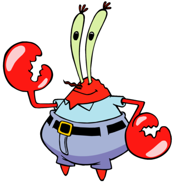
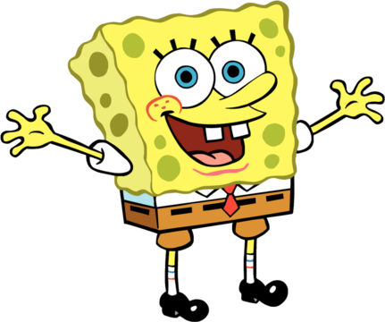
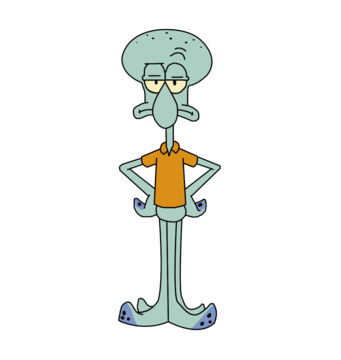

THE KRUSTY KRAB

Meet our Employees!

Krabs' pride and joy is his secret formula for the Krabby Patty - which will not be revealed here. Suck on that, Plankton >:(
Krabs resides in Bikini Bottom with his daughter, Pearl and owns a pet worm, Mr Doodles.

He began working at the Krusty Krab very soon after opening, at only 12 years old, and has been a loyal employee ever since.
Squarepants is allergic to tulips, and his favourite ice cream flavour is vanilla. Not suprisingly, his favourite food is the Krabby Patty.

In 2017, Tentacles won "Most Miserable Cashier", one of his highest acomplishments. In high school, he was voted "Most Likely to Suck Eggs".
Tentacles is an avid clarinet player and also a painter. He is allergic to seaberries, snail slime and nuts, and his favourite food is ice cream.